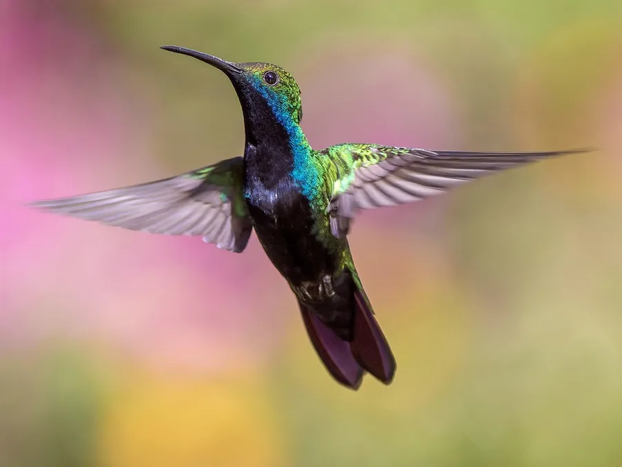
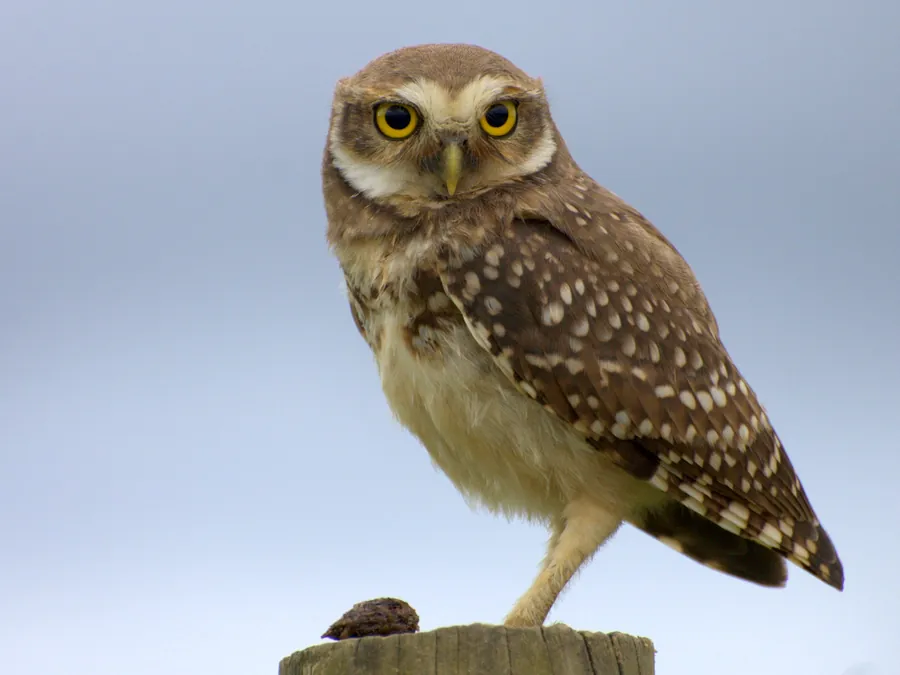
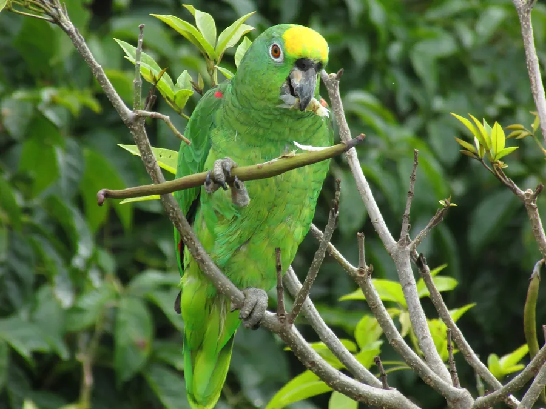
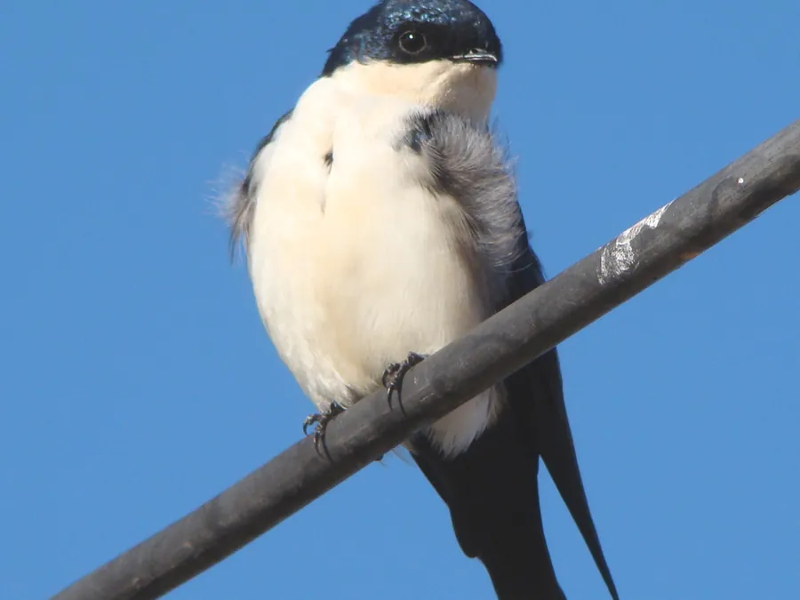
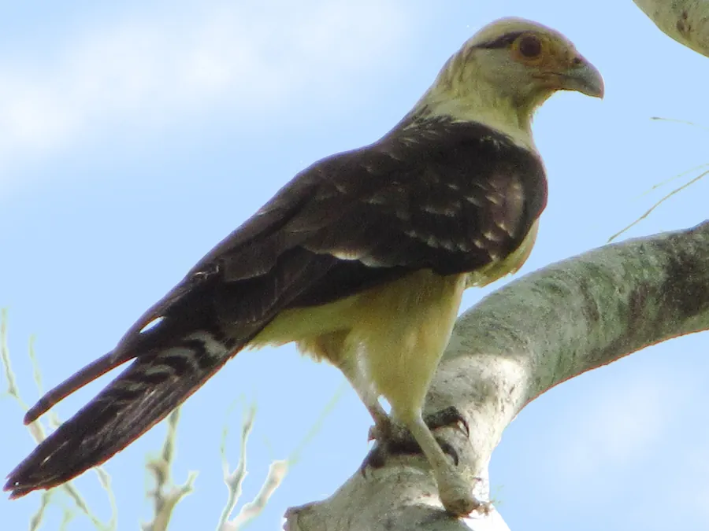
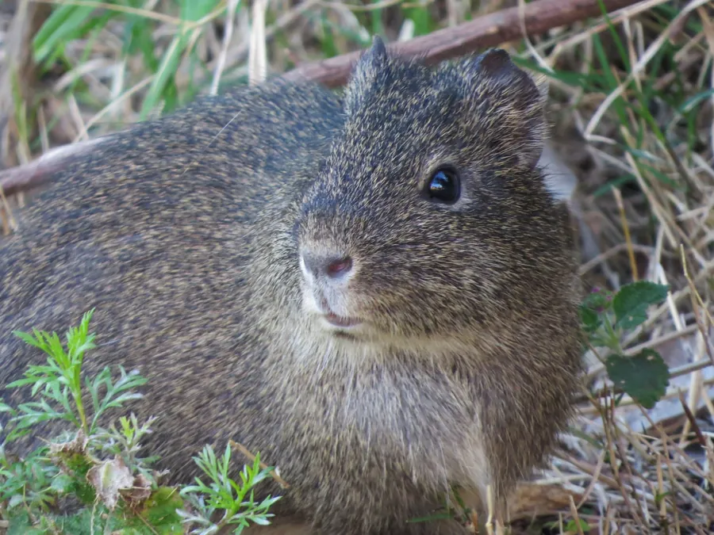
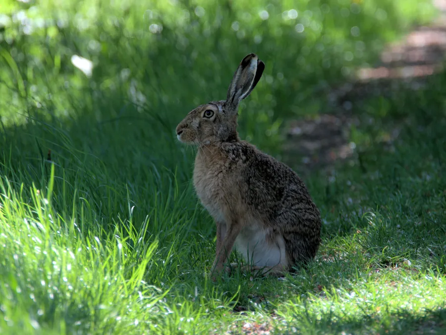

Beija-flores
Beija-flores aparecem regularmente ao redor de plantas floridas e da área residencial.
Entre a área residencial, as pastagens, os dois cursos d’água, o Río Pirapó e cerca de 12 hectares de mata e áreas florestais, observamos regularmente animais silvestres e uma vegetação muito diversa. Tudo isso faz parte naturalmente do dia a dia da propriedade.
A Granja del Sol não é uma área de uso uniforme. Mata, pastagens abertas, lavoura, área residencial e vários pontos de água criam espaços muito diferentes de abrigo e alimentação para animais e plantas.
Cerca de 12 hectares de mata e áreas florestais combinam áreas naturais maiores com reflorestamento e outras superfícies adequadas ao uso florestal de longo prazo.
Pastagens, lavoura, caminhos e a área residencial formam habitats abertos e semiabertos, onde aparecem espécies diferentes das observadas no interior da mata.
Pontos naturais de água, um curso d’água na parte frontal da propriedade, outro curso na mata que fica seco na maior parte do tempo e o Río Pirapó no limite posterior acrescentam outros habitats às áreas mais secas.
Muitos encontros não são exceções raras, mas parte da rotina da propriedade. Os animais observados variam naturalmente conforme o horário, a época do ano e a região do terreno.

Beija-flores aparecem regularmente ao redor de plantas floridas e da área residencial.

As corujas fazem parte da fauna da propriedade, especialmente nos horários mais tranquilos e depois do anoitecer.

Pequenos papagaios verdes, chamados localmente simplesmente de “loros”, também aparecem com frequência na propriedade.

Andorinhas podem ser observadas regularmente sobre as áreas abertas e ao redor da área residencial.

As aves conhecidas aqui como “Kiri” aparecem especialmente nas pastagens perto do gado.

São encontrados com frequência nas transições entre áreas abertas, vegetação mais densa e bordas da mata.

Lebres também aparecem regularmente nas áreas abertas e semiabertas da propriedade.

Os inambus são aves terrestres de aparência semelhante à de uma codorna. Nós os encontramos regularmente nas áreas abertas da propriedade.

As pequenas rolinhas terrestres conhecidas aqui como “Pyku'i” ou “tortolitas” aparecem regularmente nas áreas abertas e ao redor da casa.

Também há colônias de abelhas-melíferas vivendo livremente na propriedade. Em uma ocasião, conseguimos transferir uma colônia para uma caixa de madeira.
Cerca de 12 hectares de mata e áreas florestais ocupam uma grande parte da propriedade. Mata natural, bordas de mata, áreas de reflorestamento e plantios jovens se encontram e formam uma vegetação variada.
Uma grande parte é mantida deliberadamente em estado natural. Áreas mais densas e mais abertas, bordas da mata e sucessão natural criam estruturas e refúgios diferentes.
Em uma área aberta dentro do setor florestal foram plantadas cerca de 1.200 árvores nativas. Esse reflorestamento jovem complementa a mata existente e continua se desenvolvendo junto com a propriedade.
Entre as espécies presentes ou plantadas estão lapacho, curupaý, yvyra pyta, timbó e cedro. Assim, árvores já estabelecidas convivem com exemplares mais jovens.
Além da mata e das pastagens, a propriedade possui diversas plantas úteis e ornamentais, plantadas intencionalmente ou já estabelecidas há mais tempo. Elas acrescentam ainda mais variedade ao entorno da casa e às áreas abertas.
O conjunto inclui árvores mais antigas e plantios jovens.
Entre outras: goiaba, manga, abacate, pitanga, vários cítricos, banana, amora, ameixa e noz-pecã.
Também crescem na propriedade diferentes plantas tradicionalmente usadas no Paraguai como medicinais, para infusões ou como temperos. Elas fazem parte naturalmente do uso diversificado da vegetação existente.
Ao redor da casa e em outras áreas, diferentes plantas ornamentais e árvores de sombra completam o conjunto, entre elas jacarandá, ceibo, flamboyant, ingá, árvore-orquídea, Santa Rita e jasmim.
O anúncio completo reúne todas as informações sobre o terreno, a casa, infraestrutura, localização e preço.
Voltar à seção do terreno